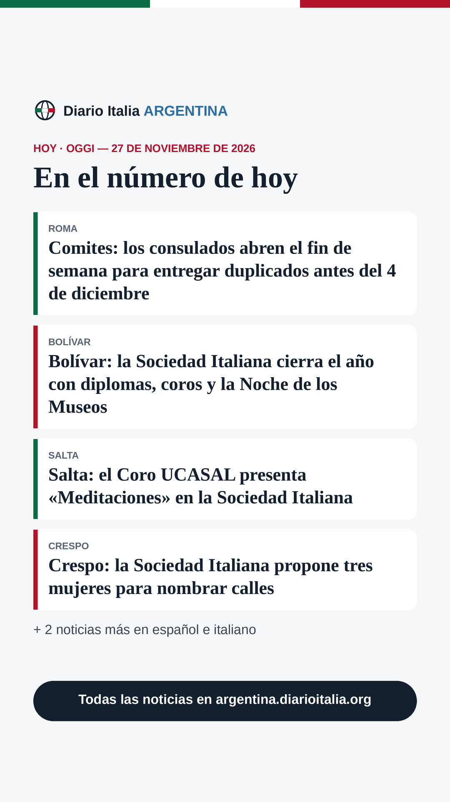

Descargar imagen · Scarica immagine🗞️ Diario Italia Argentina · 27 de noviembre de 2026 🇮🇹 Comites: los consulados abren el fin de semana para entregar duplicados antes del 4 de diciembre 📍 Bolívar: la Sociedad Italiana cierra el año con diplomas, coros y la Noche de los Museos 📍 Salta: el Coro UCASAL presenta «Meditaciones» en la Sociedad Italiana 📍 Crespo: la Sociedad Italiana propone tres mujeres para nombrar calles 🇮🇹 Oggi su Diario Italia Argentina · 27 novembre 🇮🇹 Comites: consolati aperti nel fine settimana per i duplicati prima del 4 dicembre 📍 Bolívar: la Sociedad Italiana chiude l'anno con diplomi, cori e la Notte dei Musei 📍 Salta: il Coro UCASAL presenta «Meditaciones» alla Sociedad Italiana 📍 Crespo: la Sociedad Italiana propone tre donne per intitolare strade Las 6 noticias del día en español e italiano · Tutte le notizie in spagnolo e italiano 👉 argentina.diarioitalia.org (link en la bio) #colectividaditaliana #italianosenargentina #italoargentinos #italianiinargentina #ciudadaniaitaliana #cittadinanzaitaliana #comunitaitaliana #argentina #noticias #notizie